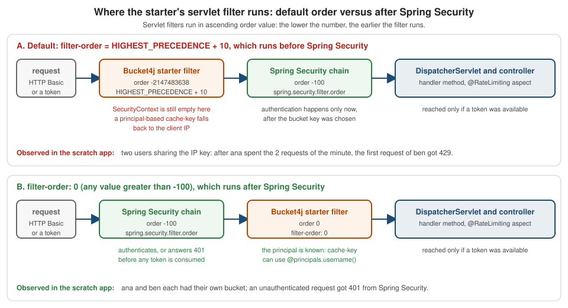

Bucket4j: The Spring Boot Starter
|
This content was generated with the assistance of AI and should be verified against the official documentation before being relied on in production. |
Writing a rate limiter by hand, as on the manual integration page,
gives full control and costs code: a filter or interceptor, a key function, a response writer, a configuration class, tests. The
bucket4j-spring-boot-starter offers the opposite trade. It turns application.yml into servlet filters (or WebFlux filters) and into an
aspect for @RateLimiting methods, so that a limit is configuration: which URLs, which key, which bandwidths, which cache. The price is
that the behaviour is the starter’s, including its defaults, its gaps and its release rhythm, which is why this page lists every property
with its default, says which version each statement applies to, and ends with a decision table.
It was written against Bucket4j 8.21.0, Spring Boot 4.1.x, Spring Framework 7.0.x and Java 21, with the starter at 0.20.0-RC1 (the line built for Spring Boot 4.1) and the differences of 0.14.0 (Boot 4.0) and 0.13.0 (Boot 3.5) marked where they exist, and verified on 4 October 2026. Every example ran: Spring Boot 4.1.1 with starter 0.20.0-RC1, Bucket4j 8.21.0, Redis 7 and PostgreSQL 17 in Testcontainers, Caffeine through JCache for the in-memory runs, real HTTP requests against a random port (MockMvc does not run the starter’s filters, see the pitfalls), and a second run of the Bookshelf YAML against starter 0.14.0 on Spring Boot 4.0.3. Every default below was read from the 0.20.0-RC1 source and compared with 0.13.0 and 0.14.0. Numbers and headers quoted are observed, not copied from the README.
Status: a community project
The starter is a community project. It lives at MarcGiffing/bucket4j-spring-boot-starter on GitHub, is licensed under Apache-2.0 and
publishes under the Maven group com.giffing.bucket4j.spring.boot.starter. Bucket4j’s own README links it among the Spring Boot
integrations, but neither the Bucket4j project nor the Spring team maintains it, reviews its releases or promises a schedule. The
release history below shows what that means in practice: seven and a half months between 0.13.0 and 0.14.0, and no general availability release of the
modular 0.20 line three weeks after its first release candidate. Treat it as a useful library with a bus factor, not as a platform component:
pin its version, read its source when a behaviour surprises you, and keep the manual integration in mind as the exit.
Versions and the migration guide
The coordinates changed twice, which is the main source of confusion, so the matrix lists the artifacts as well as the versions.
| Starter | Released | Spring Boot | Bucket4j the starter pins | Artifacts and notes |
|---|---|---|---|---|
0.13.0 |
13 July 2025 |
3.5.0 |
8.14.0 |
|
0.14.0-RC1 |
14 December 2025 |
Pre-release. |
||
0.14.0 |
28 February 2026 |
4.0.3 |
8.15.0 |
One artifact, |
0.20.0-RC1 |
11 September 2026 |
4.1.1 |
8.17.0 |
New multi-module layout (below). A pre-release: it exists on Maven Central and as a git tag, with no GitHub release. |
GA re-check. On 4 October 2026 the maven-metadata.xml of bucket4j-spring-boot-starter still names 0.14.0 as its latest and release
version (last updated 28 February 2026). The new artifacts, starter-servlet, starter-autoconfigure and cache-redis-lettuce, list
0.20.0-RC1 as their only version (last updated 11 September 2026). No 0.20.0 exists on Maven Central, and the GitHub releases page marks
0.14.0 as the latest release. Spring Boot 4.1 therefore has only a release candidate; Spring Boot 4.0 has the 0.14.0 release; Spring Boot
3.5 has 0.13.0. Check again before you adopt: the coordinates of a GA may differ from the RC.
The starter’s README carries a migration guide. Read together with the facts verified for this page, it comes down to the following.
| Step | What changes | Where it is stated |
|---|---|---|
to 0.20 |
Maven modules restructured: a feature module ( |
README guide (modules); module list, enum and pins verified in the 0.20.0-RC1 source |
to 0.14 |
Upgrade to Spring Boot 4. Bucket4j 8.14.0 to 8.15.0. |
README guide |
to 0.13 |
Bucket4j artifacts carry |
README version list |
to 0.12 |
The removed |
README guide |
to 0.9 |
Spring Boot 3 and Java 17. |
README guide |
to 0.8 |
|
README, "Explicit Configuration of the Refill Speed" |
The same Bookshelf YAML, shown at the end, ran unchanged against 0.14.0 on Spring Boot 4.0.3 and against 0.20.0-RC1 on 4.1.1 with the same results, so the property model is stable across the two Boot 4 lines; what moves is the dependency layout.
Dependencies and cache modules
With 0.20.0-RC1 an application declares two things: a feature module that says how limits are applied, and a cache module that says where the buckets live. Neither pulls the other in.
| Artifact | Applies limits through | Processing model |
|---|---|---|
|
a servlet |
Blocking. Needs a synchronous cache module. |
|
a WebFlux |
Non-blocking. Needs an asynchronous cache module. |
|
an aspect around methods annotated with |
Blocking. Needs a synchronous cache module and AspectJ on the classpath. |
| Module | cache-to-use |
Model | Bean it needs from your application |
|---|---|---|---|
|
|
synchronous |
a Spring |
|
|
both |
a |
|
|
asynchronous |
an |
|
|
asynchronous |
a |
|
|
synchronous |
a |
|
|
synchronous |
a |
|
|
asynchronous |
a Lettuce |
|
|
asynchronous |
a |
|
|
synchronous |
a |
Two rules fall out of the table, and the pitfalls section shows what happens when they are broken. A servlet filter and @RateLimiting
need a synchronous resolver, a WebFlux filter needs an asynchronous one. And cache-to-use has no caffeine value: Caffeine works
through jcache, with the Caffeine JCache provider, which keeps the buckets inside one JVM. That is right for a single instance and wrong
for replicas, as the distributed page explains; the backends behind the other
modules are the subject of the backends page.
<dependencyManagement>
<dependencies>
<!-- the starter pins Bucket4j 8.17.0; this import moves every Bucket4j jar to 8.21.0 -->
<dependency>
<groupId>com.bucket4j</groupId>
<artifactId>bucket4j_jdk17-bom</artifactId>
<version>8.21.0</version>
<type>pom</type>
<scope>import</scope>
</dependency>
</dependencies>
</dependencyManagement>
<dependencies>
<dependency>
<groupId>com.giffing.bucket4j.spring.boot.starter</groupId>
<artifactId>starter-servlet</artifactId>
<version>0.20.0-RC1</version>
</dependency>
<dependency>
<groupId>com.giffing.bucket4j.spring.boot.starter</groupId>
<artifactId>starter-aop</artifactId>
<version>0.20.0-RC1</version>
</dependency>
<dependency>
<groupId>com.giffing.bucket4j.spring.boot.starter</groupId>
<artifactId>cache-jcache</artifactId>
<version>0.20.0-RC1</version>
</dependency>
<!-- Spring Boot 4 has no spring-boot-starter-aop: AspectJ comes from this starter -->
<dependency>
<groupId>org.springframework.boot</groupId>
<artifactId>spring-boot-starter-aspectj</artifactId>
</dependency>
<!-- the starter validates its properties: a Bean Validation provider is mandatory -->
<dependency>
<groupId>org.springframework.boot</groupId>
<artifactId>spring-boot-starter-validation</artifactId>
</dependency>
<dependency>
<groupId>org.springframework.boot</groupId>
<artifactId>spring-boot-starter-cache</artifactId>
</dependency>
<dependency>
<groupId>com.github.ben-manes.caffeine</groupId>
<artifactId>jcache</artifactId>
<version>3.2.4</version>
</dependency>
</dependencies>Source: starter README at 0.20.0-RC1 (the README’s XML
uses the artifact ids servlet, webflux and aop and the group …starter.cache for cache modules, which do not exist on Maven Central:
see the discrepancy table) and the pom.xml files of the modules at the tag.
The BOM import is not decoration. Spring Boot does not manage Bucket4j, and the starter pins an older Bucket4j than the one this section is
about. With the import, the dependency tree of the scratch application showed bucket4j_jdk17-core, -jcache, -lettuce, -jedis,
-redis-common and -postgresql all at 8.21.0, and every test on this page ran on them.
<dependency>
<groupId>com.giffing.bucket4j.spring.boot.starter</groupId>
<artifactId>bucket4j-spring-boot-starter</artifactId>
<version>0.14.0</version>
</dependency>
<!-- bucket4j-spring-boot-starter-context and the JCache module come with it; add the same
spring-boot-starter-aspectj, spring-boot-starter-validation, spring-boot-starter-cache
and Caffeine's jcache as above -->Source: starter at the 0.14.0 tag. In
the scratch run on Spring Boot 4.0.3 this single artifact brought bucket4j-spring-boot-starter-context, bucket4j_jdk17-core 8.15.0 and
bucket4j_jdk17-jcache 8.15.0.
A first limit
The smallest useful configuration limits /books to 20 requests per minute per API key. JCache over Caffeine is the cache; @EnableCaching
on any configuration class makes Spring Boot create the CacheManager that the JCache module looks for.
spring:
cache:
type: jcache
cache-names: buckets
jcache:
provider: com.github.benmanes.caffeine.jcache.spi.CaffeineCachingProvider
bucket4j:
enabled: true
cache-to-use: jcache
filters:
- cache-name: buckets
url: /books.*
rate-limits:
- cache-key: "getHeader('X-API-Key') ?: 'anonymous'"
bandwidths:
- capacity: 20
time: 1
unit: minutesTwenty requests with the same X-API-Key came back with 200 and X-Rate-Limit-Remaining counting 19, 18, and so on down to 0. The twenty-first
was rejected:
status: 429
x-rate-limit-retry-after-seconds: 2
content-type: application/json;charset=ISO-8859-1
body: { "message": "Too many requests!" }Source: observed with starter 0.20.0-RC1; the defaults come from Bucket4JBootProperties and DefaultServletRateLimitFilter in the
starter source at 0.20.0-RC1.
Three things in that output are worth reading twice. The reply carries X-Rate-Limit-Retry-After-Seconds and no standard Retry-After. The body is
a fixed JSON string, not a problem detail. And the content type gained ;charset=ISO-8859-1 because the starter writes the body through
getWriter() without setting an encoding; the section on responses shows how to fix all three.
How the configuration resolves
Every limit in the YAML ends in the same place: a Bucket4j BucketConfiguration and a key, handed to a ProxyManager that the cache
module built. The diagram follows one bucket4j.filters[] entry (and, in grey, a bucket4j.methods[] entry) from properties to bucket.
url regex, filter-method, filter-order,
strategy, cache-name"] P --> M["methods[]
name, cache-name, rate-limit"] F --> RL["rate-limits[]
conditions, predicates,
cache-key, num-tokens"] M --> RL RL --> BW["bandwidths[]
capacity, time, unit,
refill-speed, initial-capacity"] BW --> BC["BucketConfiguration
built once at startup"] RL -->|"SpEL value per request"| KEY["bucket key
filter: url + '-' + cache-key
method: method name + '-' + cache-key"] F -->|"cache-name"| CR["cache resolver
chosen by cache-to-use"] M -->|"cache-name"| CR CR --> PM["ProxyManager
JCache, Jedis, Lettuce, PostgreSQL, ..."] BC --> PM KEY --> PM PM --> B["bucket in the store
tryConsumeAndReturnRemaining(num-tokens)"]
Source: Bucket4JBaseConfiguration, RateLimitService and RateLimitAspect in the
starter source at 0.20.0-RC1.
Four consequences follow from the diagram, and each was confirmed by running it.
-
The bucket key is the URL plus the SpEL value. A filter with
url: /books.andcache-key: getHeader('X-API-Key')stores the bucket of the keyabcunder/books.-abc. That is literally the Redis key observed with Jedis (/ping-jedis-kforurl: /ping) and theidof the row observed in PostgreSQL (/books.*-pg-key). For methods the prefix is the method name instead of the URL. -
Two filters never share a bucket, because their URL strings differ. Two rate limits of the same filter with the same
cache-keyand identical bandwidths do share one, which is how the Bookshelf below makes a search cost 5 tokens of the same bucket. -
The configuration is built once. The
BucketConfigurationis created when the filter is built, not per request; only the key is evaluated per request. Changing a bandwidth afterwards needs the dynamic update mechanism below. -
The listener for metrics is attached per consumption, which is why the counters carry the tags that the SpEL tag expressions produced for that request.
How a request is evaluated
A filter is selected when request.getRequestURI() matches the url regular expression completely. Its rate limits then run in order. For each
rate limit the starter evaluates four checks in a fixed order, and only a rate limit that survives all four consumes tokens.
(estimate only, if post-execute-condition is set)"] F --> G{"tokens available?"} G -->|yes| H{"strategy"} G -->|no| R["status, headers and body of the rejection,
the rest of the chain is not called"] H -->|FIRST| S["stop evaluating, call the chain"] H -->|ALL| N["next rate limit, then call the chain"] X --> NX["next rate limit"]
Source: DefaultServletRateLimitFilter and RateLimitService.performSkipRateLimitCheck at
0.20.0-RC1.
The order matters when conditions and predicates are mixed: skip-condition and skip-predicates are checked before execute-condition
and execute-predicates. A rate limit that is skipped returns nothing, and with strategy: first the loop moves on to the next rate limit;
only the first rate limit that is applied ends it. That is the property the Bookshelf YAML relies on to select a plan.
strategy: first against strategy: all, same two rate limits, 100 and 3 requests per minutebucket4j:
filters:
- cache-name: buckets
url: /first
strategy: first # only the first applied rate limit is consumed
rate-limits:
- cache-key: "'strategy-first'"
bandwidths: [ { capacity: 100, time: 1, unit: minutes } ]
- cache-key: "'strategy-first-tight'"
bandwidths: [ { capacity: 3, time: 1, unit: minutes } ]
- cache-name: buckets
url: /all
strategy: all # every applied rate limit is consumed, the first rejection wins
rate-limits:
- cache-key: "'strategy-all'"
bandwidths: [ { capacity: 100, time: 1, unit: minutes } ]
- cache-key: "'strategy-all-tight'"
bandwidths: [ { capacity: 3, time: 1, unit: minutes } ]Source: starter README: Rate limit strategy.
Observed: on /first the X-Rate-Limit-Remaining header read 99 and then 98 and six requests all passed, because the tight limit was never
consulted. On /all the header read 2, 1 and 0 (the smallest remaining value of all consumed rate limits) and the fourth request was
rejected. Remember the constant keys in these rate limits, 'strategy-first' and so on: a SpEL literal needs its own quotes inside the YAML
string.
The property reference
Everything lives under the prefix bucket4j. The tables give the default and the validation rule where there is one. All defaults are
identical in 0.13.0, 0.14.0 and 0.20.0-RC1 unless a row says otherwise.
General properties
| Property | Default | Meaning |
|---|---|---|
|
|
Switches the whole starter off. Every starter auto-configuration is conditional on it. |
|
unset |
Chooses one cache module when several are on the classpath. Values: |
|
empty |
The web filters; each entry has the properties of the next table. |
|
empty |
Named configurations for |
|
|
Stores each filter’s configuration in a cache so that it can be replaced at runtime. Every filter must then have an |
|
|
The cache that holds those configurations. It must exist, or startup fails. |
|
empty |
Tags ( |
|
empty |
The same for methods. The SpEL context of a method has the method and its arguments, not the request, so the expression differs. |
|
|
Content type of a rejection when the filter sets none. |
|
|
A Spring |
|
|
Body of a rejection when the filter sets none. |
Source: starter README: Bucket4j complete properties and
Bucket4JBootProperties at 0.20.0-RC1.
Filter properties
| Property | Default | Meaning |
|---|---|---|
|
none |
Names the filter and its bean ( |
|
|
The cache, passed to the cache module. For JCache it must be a cache that exists; the Redis modules ignore the name (one key space, the bucket key includes the URL). |
|
|
A regular expression matched against the whole |
|
|
|
|
|
|
|
|
The order of the servlet filter bean, which is -2147483638. It runs before Spring Security’s chain (order -100), so it cannot see the principal. Any value above -100 puts it after Spring Security: see the next section. |
|
required, not empty |
The limits of this filter; see below. |
|
|
The status of a rejection, a |
|
|
The content type of a rejection. |
|
|
The body of a rejection. |
|
empty map |
Extra headers sent on a rejection only. |
|
|
Suppresses |
|
|
Accepted but never read by the starter in 0.13.0, 0.14.0 or 0.20.0-RC1; setting it to |
|
all five |
|
|
empty |
|
|
|
Between 1 and 92,000,000. Part of the version of the stored configuration, for dynamic updates. |
|
|
Between 1 and 99,999,999,999. The version number is |
Rate-limit properties
| Property | Default | Meaning |
|---|---|---|
|
|
A SpEL expression that gives the per-client part of the bucket key. The default is the constant |
|
|
Tokens consumed per request, at least 1. A search that costs five is |
|
required, not empty |
The bandwidths of the bucket; see below. |
|
none |
A SpEL boolean. The rate limit is applied only if it is true. |
|
none |
A SpEL boolean. The rate limit is skipped if it is true. |
|
empty |
Applied only if all match. Written |
|
empty |
The same, with the opposite meaning: skipped if all match. |
|
none |
A SpEL boolean evaluated on the |
|
|
What happens to the stored tokens when a configuration is replaced at runtime: |
Predicates exist only for filters: the method aspect is built without a predicate registry, so execute-predicates and skip-predicates under
bucket4j.methods[] do not work (read from RateLimitAspect; use conditions there).
Bandwidth properties
| Property | Default | Meaning |
|---|---|---|
|
required, positive |
The bucket size, in tokens. |
|
required |
The refill period, |
|
|
Tokens added per period, at least 1. |
|
|
|
|
|
The tokens in a new bucket, zero or more. |
|
none |
Names the bandwidth. Several bandwidths without ids are allowed only with the |
The mapping to the Bucket4j API is direct, as the token bucket page describes: a rate limit with two bandwidths builds one bucket with two limits, and the tightest one decides.
bucket4j:
filters:
- cache-name: buckets
url: /r5
rate-limits:
- cache-key: "getRemoteAddr()"
bandwidths:
- id: hourly
capacity: 100
time: 1
unit: hours
refill-speed: interval
- id: burst
capacity: 3
time: 1
unit: secondsSource: Bucket4j reference: Bandwidth.
Observed: X-Rate-Limit-Remaining was 2 after the first request, the fourth request inside one second was rejected with
X-Rate-Limit-Retry-After-Seconds: 0, and after 1.1 seconds the next request passed. The 0 is the next thing to know: the starter converts the wait
with TimeUnit.NANOSECONDS.toSeconds, which truncates, so a wait below one second is reported as zero.
Method configuration
| Property | Default | Meaning |
|---|---|---|
|
required |
The name that |
|
required |
The cache, as for filters. |
|
required |
One rate limit, with the same properties as |
Cache keys with SpEL
The cache-key of a rate limit, and the expressions of conditions and metric tags, are Spring Expression Language. For a servlet filter the root
object is the HttpServletRequest, so getRemoteAddr(), getHeader('X-API-Key') and getRequestURI() are method calls on it. Application beans
are reachable with @beanName, which is how the Bookshelf asks its own ApiKeyDirectory for the plan of a key. The elvis operator ?: gives
a fallback, which is the usual way to say "the user if there is one, otherwise the IP".
| Expression | Meaning |
|---|---|
|
One bucket per client IP. Behind a reverse proxy this is the proxy’s address unless the container is told to honour the forwarded headers (Spring Boot’s
|
|
One bucket per API key, and one shared bucket for requests without a key. |
|
A condition that calls a bean method with a request header. |
|
The authenticated user, otherwise the IP. Works only if the filter runs after Spring Security. |
|
A constant. Note the quotes inside the YAML string: without them SpEL would read a property path. |
Source: starter README: Cache key for filter.
Conditions, predicates and the post-execute condition
The three families of conditions answer different questions. skip-condition and execute-condition are SpEL and see the request. The predicates are the
declarative shorthand for the common cases. post-execute-condition is the odd one out: it sees the response, so that a limit can count only
what happened. The classic use is login attempts: only the failures should cost a token.
bucket4j:
cache-to-use: jcache
filters:
# skip-condition: requests carrying X-Internal: true are never limited
- cache-name: buckets
url: /ping
rate-limits:
- cache-key: "'cond-skip'"
skip-condition: "getHeader('X-Internal') == 'true'"
bandwidths: [ { capacity: 2, time: 1, unit: minutes } ]
# execute-predicates: METHOD=POST limits only POST requests to /ping2 (GET passes through)
- cache-name: buckets
url: /ping2
rate-limits:
- cache-key: "'cond-post'"
execute-predicates: [ "METHOD=POST" ]
bandwidths: [ { capacity: 2, time: 1, unit: minutes } ]
# post-execute-condition: only failed attempts (HTTP 401) consume a token
- cache-name: buckets
url: /login-attempt
rate-limits:
- cache-key: "'cond-login'"
post-execute-condition: "getStatus() eq 401"
bandwidths: [ { capacity: 3, time: 1, unit: minutes } ]All three behaved as described. Ten requests carrying X-Internal: true left the bucket untouched, so two external requests still passed and the third
was rejected. On /ping2 five GET requests passed untouched while the third POST was rejected and a following GET still passed. On
/login-attempt five successful requests consumed nothing, three requests answered 401 consumed the three tokens, and the next request, even a
successful one, was rejected with 429 because the pre-check found no token left.
The filter order and Spring Security
The default filter-order is Ordered.HIGHEST_PRECEDENCE + 10, which is -2147483638. Spring Security’s filter chain is registered with the order
-100 (the Spring Boot property spring.security.filter.order), and servlet filters run in ascending order. The starter’s filter therefore runs
first: when it evaluates the key, nobody has authenticated yet, and the SecurityContextHolder is empty.

For limits per IP or per API key that is perfect: the rejected request costs almost nothing and never reaches the security chain. For limits per
user it is a trap, and it fails silently: the expression finds no principal and falls back to whatever you wrote after the elvis operator. The
two profiles below differ in a single line, filter-order: 0, and in nothing else.
package scratch;
import org.springframework.security.core.Authentication;
import org.springframework.security.core.context.SecurityContextHolder;
import org.springframework.stereotype.Component;
/** Referenced from SpEL as @principals: the authenticated user name, or null when nobody is authenticated (yet). */
@Component("principals")
class Principals {
public String username() {
Authentication authentication = SecurityContextHolder.getContext().getAuthentication();
if (authentication == null || !authentication.isAuthenticated() || "anonymousUser".equals(authentication.getName())) {
return null;
}
return authentication.getName();
}
}package scratch;
import org.springframework.context.annotation.Bean;
import org.springframework.context.annotation.Configuration;
import org.springframework.context.annotation.Profile;
import org.springframework.security.config.annotation.web.builders.HttpSecurity;
import org.springframework.security.core.userdetails.User;
import org.springframework.security.core.userdetails.UserDetailsService;
import org.springframework.security.provisioning.InMemoryUserDetailsManager;
import org.springframework.security.web.SecurityFilterChain;
@Configuration(proxyBeanMethods = false)
class SecurityConfig {
@Bean
@Profile("!secured")
SecurityFilterChain open(HttpSecurity http) throws Exception {
return http.authorizeHttpRequests(a -> a.anyRequest().permitAll()).csrf(c -> c.disable()).build();
}
/** HTTP Basic: the principal only exists after Spring Security's filter chain has run. */
@Bean
@Profile("secured")
SecurityFilterChain basic(HttpSecurity http) throws Exception {
return http.authorizeHttpRequests(a -> a.requestMatchers("/actuator/**").permitAll().anyRequest().authenticated())
.httpBasic(b -> { })
.csrf(c -> c.disable()).build();
}
@Bean
@Profile("secured")
UserDetailsService users() {
return new InMemoryUserDetailsManager(
User.withUsername("ana").password("{noop}demo-only").roles("USER").build(),
User.withUsername("ben").password("{noop}demo-only").roles("USER").build());
}
}# default filter-order (HIGHEST_PRECEDENCE + 10): runs before Spring Security, the principal is not known yet
bucket4j:
cache-to-use: jcache
filters:
- cache-name: buckets
url: /me
rate-limits:
- cache-key: "@principals.username() ?: 'order-default-' + getRemoteAddr()"
bandwidths: [ { capacity: 2, time: 1, unit: minutes } ]filter-order: 0: runs after Spring Security# filter-order 0 (> -100): runs after Spring Security's filter chain, the principal is known
bucket4j:
cache-to-use: jcache
filters:
- cache-name: buckets
url: /me
filter-order: 0
rate-limits:
- cache-key: "@principals.username() ?: 'order-after-' + getRemoteAddr()"
bandwidths: [ { capacity: 2, time: 1, unit: minutes } ]Source: Spring Boot: spring.security.filter.order and Spring Security: SecurityContextHolder. See the Spring Security page for the chain itself.
With the default order, ana made two requests and then ben’s first request was answered `429: both users shared the bucket of the IP
fallback. With filter-order: 0, ana was limited after her two requests while ben got 200 with his own bucket, and a request without credentials got 401 from Spring Security.
Any value above -100 works; 0 is only a readable choice. The cost of running after Security is that the security chain’s work is done before a request is rejected.
Responses and headers
The two servlet headers are the whole contract; WebFlux sends less.
| Case | Servlet filter | WebFlux filter |
|---|---|---|
Request allowed |
|
the same |
Request rejected |
status, |
only the configured |
|
neither header on allowed or rejected requests, and also none of the custom |
the same switch |
It never sends Retry-After, RateLimit or RateLimit-Policy headers, and it never produces a ProblemDetail. The WebFlux behaviour was observed on a
real Netty server: after three allowed requests the fourth got 429 with content-type: application/json and the default body, and no retry header.
Custom http-response-headers apply only to rejections (the allowed /r1 response carried none), and hide-http-response-headers removes them too, which contradicts the
description in the property’s Javadoc and README ("does not affect custom headers"). Here are the two filters that showed it.
hide-http-response-headersbucket4j:
filters:
- cache-name: buckets
url: /r1
http-status-code: SERVICE_UNAVAILABLE
http-content-type: text/plain;charset=UTF-8
http-response-body: slow down
http-response-headers:
X-Policy: bookshelf-v1
rate-limits:
- cache-key: "'r1'"
bandwidths: [ { capacity: 1, time: 1, unit: minutes } ]
- cache-name: buckets
url: /r2
hide-http-response-headers: true
http-response-headers:
X-Policy: bookshelf-v1
rate-limits:
- cache-key: "'r2'"
bandwidths: [ { capacity: 1, time: 1, unit: minutes } ]Source: starter README: Filter Bucket4j properties and DefaultServletRateLimitFilter at 0.20.0-RC1.
On /r1 the second request got 503, the body slow down, x-policy: bookshelf-v1 and x-rate-limit-retry-after-seconds: 59. On /r2 the
rejection carried status 429 and only content-length, content-type and date; the allowed response had no X-Rate-Limit-Remaining.
Adding Retry-After and a ProblemDetail
A client that follows RFC 9110 looks for Retry-After, and a client of a Spring Boot API often expects RFC 9457 problem details. The starter offers
neither, but both can be added in two small pieces without forking anything.
For the filter path there is a nuance: the starter writes the rejection itself, from properties, so its body is static. Put the problem JSON in the
properties, with the right content type (and an explicit charset, which also fixes the ISO-8859-1 default), and add Retry-After from a tiny
filter that runs just before the starter’s and mirrors its header. The starter calls setHeader on the response it receives, so a response wrapper sees it.
Retry-Afterpackage scratch;
import jakarta.servlet.FilterChain;
import jakarta.servlet.ServletException;
import jakarta.servlet.http.HttpServletRequest;
import jakarta.servlet.http.HttpServletResponse;
import jakarta.servlet.http.HttpServletResponseWrapper;
import org.springframework.context.annotation.Profile;
import org.springframework.core.Ordered;
import org.springframework.http.HttpHeaders;
import org.springframework.stereotype.Component;
import org.springframework.web.filter.OncePerRequestFilter;
import java.io.IOException;
/**
* Runs just before the starter's filter (HIGHEST_PRECEDENCE + 10) and mirrors the starter's
* X-Rate-Limit-Retry-After-Seconds header into the standard Retry-After header (RFC 9110).
* Requires hide-http-response-headers: false (the default) on the filter: with hidden headers the starter
* sets no X-Rate-Limit-Retry-After-Seconds, so there is nothing to mirror and no Retry-After is sent.
*/
@Component
@Profile("problem")
class RetryAfterFilter extends OncePerRequestFilter implements Ordered {
static final String STARTER_HEADER = "X-Rate-Limit-Retry-After-Seconds";
@Override
public int getOrder() {
return Ordered.HIGHEST_PRECEDENCE + 5;
}
@Override
protected void doFilterInternal(HttpServletRequest request, HttpServletResponse response, FilterChain chain)
throws ServletException, IOException {
chain.doFilter(request, new HttpServletResponseWrapper(response) {
@Override
public void setHeader(String name, String value) {
super.setHeader(name, value);
if (STARTER_HEADER.equalsIgnoreCase(name)) {
// the starter truncates to whole seconds: round up so that clients never retry too early
super.setHeader(HttpHeaders.RETRY_AFTER, String.valueOf(Long.parseLong(value) + 1));
}
}
});
}
}# Retry-After and RFC 9457 problem details on top of the starter
bucket4j:
cache-to-use: jcache
default-http-content-type: application/problem+json;charset=UTF-8
default-http-response-body: '{"type":"about:blank","title":"Too Many Requests","status":429,"detail":"Rate limit exceeded. Retry after the number of seconds in the Retry-After header."}'
filters:
- cache-name: buckets
url: /books/search.*
rate-limits:
- cache-key: "'problem-filter'"
bandwidths: [ { capacity: 1, time: 1, unit: minutes } ]
methods:
- name: bookshelf-isbn
cache-name: buckets
rate-limit:
bandwidths: [ { capacity: 1, time: 1, unit: minutes } ]Observed on the filter path: status 429, content-type: application/problem+json;charset=UTF-8, x-rate-limit-retry-after-seconds: 59, retry-after: 60 and
the configured body. The + 1 rounds the starter’s truncated seconds up, so a client never retries too early. The wrapper only
works while the filter sends the starter header: with hide-http-response-headers: true the starter sets no
X-Rate-Limit-Retry-After-Seconds, the wrapper has nothing to mirror, and the 429 goes out without Retry-After. Keep
hide-http-response-headers at its default of false on any filter that relies on this wrapper.
For @RateLimiting methods the starter does not write a response at all: it throws a RateLimitException, which carries the configuration name,
the remaining tokens and the nanoseconds to wait. Unhandled it becomes a 500 (observed). A @RestControllerAdvice turns it into a real problem detail with the exact value.
RateLimitException to a ProblemDetail and Retry-Afterpackage scratch;
import com.giffing.bucket4j.spring.boot.starter.context.RateLimitException;
import org.springframework.context.annotation.Profile;
import org.springframework.http.HttpHeaders;
import org.springframework.http.HttpStatus;
import org.springframework.http.ProblemDetail;
import org.springframework.http.ResponseEntity;
import org.springframework.web.bind.annotation.ExceptionHandler;
import org.springframework.web.bind.annotation.RestControllerAdvice;
import java.util.concurrent.TimeUnit;
/** Maps the RateLimitException thrown by @RateLimiting methods to RFC 9457 problem details plus Retry-After. */
@RestControllerAdvice
@Profile("problem")
class RateLimitProblems {
@ExceptionHandler(RateLimitException.class)
ResponseEntity<ProblemDetail> onRateLimit(RateLimitException e) {
long seconds = Math.max(1, TimeUnit.NANOSECONDS.toSeconds(e.getRetryAfterNanoSeconds() + 999_999_999L));
ProblemDetail problem = ProblemDetail.forStatusAndDetail(HttpStatus.TOO_MANY_REQUESTS,
"Rate limit '" + e.getConfigurationName() + "' exceeded");
problem.setTitle("Too Many Requests");
problem.setProperty("retryAfterSeconds", seconds);
return ResponseEntity.status(HttpStatus.TOO_MANY_REQUESTS)
.header(HttpHeaders.RETRY_AFTER, String.valueOf(seconds))
.body(problem);
}
}Source: Spring Framework: Error responses.
Observed on the method path: 429, content-type: application/problem+json, retry-after: 60 and a body with detail, instance, status,
title and the extra property retryAfterSeconds. For an API that wants the same shape on both paths, the manual integration on
its own page writes both from one place.
Method-level limiting
@RateLimiting puts a limit on a Spring bean’s public methods through an AOP aspect, which is the way to protect something that is not an HTTP
request: the Bookshelf’s calls to the ISBN provider, a mail sender, an export. The annotation names a configuration under bucket4j.methods[]
and may override parts of it.
| Attribute | Default | Meaning |
|---|---|---|
|
required |
The |
|
empty |
SpEL for the key, overriding the configuration’s |
|
empty |
SpEL; overrides the configuration’s |
|
empty |
SpEL; overrides |
|
|
Documented as "adds the method name to the key". It has no effect, see the pitfalls: the key always starts with the method name. |
|
empty |
A public method of the same class with the same parameter types and return type, called instead of throwing. Checked at startup. |
|
- |
On a type or method: no limiting even if the type carries |
On a type, @RateLimiting covers all public methods. Conditions and predicates of a configuration are SpEL over the method’s arguments; the
startup check rejects expressions that use a variable that is not a parameter.
package scratch;
import com.giffing.bucket4j.spring.boot.starter.context.IgnoreRateLimiting;
import com.giffing.bucket4j.spring.boot.starter.context.RateLimiting;
import org.springframework.context.annotation.Profile;
import org.springframework.stereotype.Service;
/** Class-level @RateLimiting protects every public method; @IgnoreRateLimiting opts one out. */
@Service
@Profile("annotations")
@RateLimiting(name = "isbn-class", cacheKey = "'isbn-class'")
public class IsbnService {
/** limited by the class-level annotation */
public String lookup(String isbn) {
return "metadata for " + isbn;
}
/** never limited */
@IgnoreRateLimiting
public String health() {
return "up";
}
/** own configuration, key per ISBN, execute only for non-blank ISBNs, skipped for the test ISBN, fallback when limited */
@RateLimiting(name = "isbn-per-isbn", cacheKey = "#isbn", executeCondition = "#isbn != ''", skipCondition = "#isbn == '0000000000'",
fallbackMethodName = "cachedLookup")
public String lookupLimited(String isbn) {
return "live " + isbn;
}
public String cachedLookup(String isbn) {
return "cached " + isbn;
}
/** ratePerMethod = true adds the method name to the key, so two methods using the same configuration do not share a bucket */
@RateLimiting(name = "isbn-shared-config", cacheKey = "'k'", ratePerMethod = true)
public String methodA() { return "a"; }
@RateLimiting(name = "isbn-shared-config", cacheKey = "'k'", ratePerMethod = true)
public String methodB() { return "b"; }
@RateLimiting(name = "isbn-shared-config", cacheKey = "'k2'")
public String methodC() { return "c"; }
@RateLimiting(name = "isbn-shared-config", cacheKey = "'k2'")
public String methodD() { return "d"; }
/** two overloads with the same method name: the key is prefixed with the method NAME, so they share a bucket */
@RateLimiting(name = "isbn-shared-config", cacheKey = "'ov'")
public String overloaded(String s) { return "s"; }
@RateLimiting(name = "isbn-shared-config", cacheKey = "'ov'")
public String overloaded(int i) { return "i"; }
}bucket4j:
cache-to-use: jcache
methods:
- name: isbn-class
cache-name: buckets
rate-limit:
bandwidths: [ { capacity: 2, time: 1, unit: minutes } ]
- name: isbn-per-isbn
cache-name: buckets
rate-limit:
bandwidths: [ { capacity: 1, time: 1, unit: minutes } ]
- name: isbn-shared-config
cache-name: buckets
rate-limit:
bandwidths: [ { capacity: 1, time: 1, unit: minutes } ]Run against that service: with a limit of 2, the third lookup threw RateLimitException ("Rate limit exceeded for configuration isbn-class and
cache-key 'isbn-class' … Retry after: 29962ms . Remaining tokens: 0"); health() was never limited; with the key #isbn the second lookupLimited("978-1")
returned cached 978-1 through the fallback while another ISBN had its own bucket; the 0000000000 ISBN (skip) and the empty ISBN (execute condition false) were never
limited; the two overloads of overloaded shared one bucket; and the four methods that use the same configuration with the same cacheKey each had their own
bucket, whether ratePerMethod was true or not.
Redis and the Lettuce RedisClient bean
Spring Boot’s Redis support creates a LettuceConnectionFactory for Spring Data Redis. It creates neither a Lettuce RedisClient nor a JedisPool, and the
starter’s Redis modules are conditional on exactly those beans. The test getBeansOfType(RedisClient.class) on a Boot 4.1.1 application with Spring Data Redis returned an empty
map. Without the bean the module stays inactive, and the application fails at startup with NoCacheConfiguredException (no resolver, so nothing to build the filter on).
The second rule is easier to miss: the Lettuce module is asynchronous, so it is only active when a filter-method: webflux filter is configured.
A servlet application cannot use redis-lettuce, even with the RedisClient bean in place. Three experiments against a Redis 7 container pinned the rules down:
-
servlet filter with
cache-to-use: redis-jedisand aJedisPoolbean: limited correctly, one key/ping-jedis-kin Redis with a remaining time of 69783 ms (a one-minute refill plus the 10 seconds the module keeps a bucket after it is full again; the module hardcodesexpirationAfterWrite, it is not a property). -
servlet filter with
cache-to-use: redis-lettuceand aRedisClientbean:NoCacheConfiguredExceptionat startup. -
WebFlux filter with
cache-to-use: redis-lettuceand aRedisClientbean: three allowed requests, the fourth429, one key in Redis; the same application without the bean:NoCacheConfiguredException.
package scratch;
import org.springframework.beans.factory.annotation.Value;
import org.springframework.context.annotation.Bean;
import org.springframework.context.annotation.Configuration;
import org.springframework.context.annotation.Profile;
import redis.clients.jedis.JedisPool;
/** Boot creates neither a JedisPool nor a Lettuce RedisClient bean: the starter's Redis modules need one. */
@Configuration(proxyBeanMethods = false)
class RedisConfig {
@Bean(destroyMethod = "close")
@Profile("redis-jedis")
JedisPool jedisPool(@Value("${bookshelf.redis.host}") String host, @Value("${bookshelf.redis.port}") int port) {
return new JedisPool(host, port);
}
@Bean(destroyMethod = "shutdown")
@Profile("redis-lettuce-servlet")
io.lettuce.core.RedisClient redisClient(@Value("${bookshelf.redis.host}") String host, @Value("${bookshelf.redis.port}") int port) {
return io.lettuce.core.RedisClient.create(io.lettuce.core.RedisURI.create(host, port));
}
}RedisClient bean and the YAML of the WebFlux Bookshelf (a separate application: starter-servlet and starter-webflux cannot share a classpath)package reactiveapp;
import io.lettuce.core.RedisClient;
import io.lettuce.core.RedisURI;
import org.springframework.beans.factory.annotation.Value;
import org.springframework.boot.autoconfigure.SpringBootApplication;
import org.springframework.context.annotation.Bean;
import org.springframework.web.bind.annotation.GetMapping;
import org.springframework.web.bind.annotation.RestController;
/** WebFlux Bookshelf with the starter's webflux filter and Redis through Lettuce (needs the RedisClient bean). */
@SpringBootApplication
@RestController
public class ReactiveApplication {
@GetMapping("/books")
String books() {
return "books";
}
@Bean(destroyMethod = "shutdown")
@org.springframework.boot.autoconfigure.condition.ConditionalOnProperty(name = "bookshelf.redis.client", havingValue = "true", matchIfMissing = true)
RedisClient redisClient(@Value("${bookshelf.redis.host}") String host, @Value("${bookshelf.redis.port}") int port) {
return RedisClient.create(RedisURI.create(host, port));
}
}bucket4j:
enabled: true
cache-to-use: redis-lettuce
filters:
- cache-name: buckets
filter-method: webflux
url: /books.*
rate-limits:
- cache-key: "getHeaders().getFirst('X-API-Key') ?: 'reactive-anonymous'"
bandwidths: [ { capacity: 3, time: 1, unit: minutes } ]
management:
endpoints:
web:
exposure:
include: health,metrics,bucket4jThe PostgreSQL module (0.20.0-RC1) was run the same way with a DataSource from a PostgreSQL 17 container and the table
CREATE TABLE bucket(id VARCHAR(255) PRIMARY KEY, state BYTEA, expires_at BIGINT): three requests passed, the fourth got 429, and the table held one row
with id /books.*-pg-key and a null expires_at. Nothing deletes old rows, so schedule the cleanup that
the backends page describes. For the choice between Redis and a database as a store, and for
what happens when the store is down, see the production checklist.
Dynamic configuration updates
A restart is the usual way to change a limit; the starter also has an experimental mechanism to replace a filter’s configuration at runtime. It needs
filter-config-caching-enabled: true, an id on every filter, a cache named by filter-config-cache-name, and the version properties.
The configuration is stored in the cache; the version major * 100000000000 + minor decides whether a stored configuration wins over the one in the
YAML (the higher or equal one stays), so a change made in the YAML without bumping a version is silently ignored once a stored copy exists.
bucket4j:
cache-to-use: jcache
filter-config-caching-enabled: true
filter-config-cache-name: filterConfigCache
filters:
- id: dynamic-ping
major-version: 1
minor-version: 1
cache-name: buckets
url: /ping
rate-limits:
- cache-key: "'dynamic'"
tokens-inheritance-strategy: PROPORTIONALLY
bandwidths: [ { id: per-minute, capacity: 2, time: 1, unit: minutes } ]Bucket4JConfiguration current = filterConfigs.getValue("dynamic-ping");
Bucket4JConfiguration update = filterConfigs.getValue("dynamic-ping");
update.getRateLimits().get(0).getBandwidths().get(0).setCapacity(10);
update.setMinorVersion(2);
// null when acceptable: a higher version, and no change of filterMethod, filterOrder or cacheName
ResponseEntity<String> problem = Bucket4JUtils.validateConfigurationUpdate(current, update);
if (problem == null) {
filterConfigs.setValue("dynamic-ping", update); // CacheManager<String, Bucket4JConfiguration> bean
}Source: starter README: Dynamically updating rate limits and Bucket4j reference: TokensInheritanceStrategy.
Observed: after one request (one of two tokens left) the update raised the capacity to 10 with PROPORTIONALLY; the next request returned
X-Rate-Limit-Remaining: 4 (5 tokens inherited, one consumed), and the stored version read 100000000002. tokens-inheritance-strategy and the
bandwidth id correspond to Bucket4j’s TokensInheritanceStrategy and bandwidth ids; as the token bucket page
explains for replaceConfiguration, ids must match between old and new configuration for tokens to carry over. The cache must be shared for the update to reach all instances: with JCache
over Caffeine, as here, only the local instance changes, whereas the Redis modules provide a cache manager and a listener on Redis (read from the module source, not run).
The README’s own caveat applies: the feature is experimental, a corrupted stored configuration can stop startup, and Bucket4JUtils is there to validate before you store.
Metrics and the Actuator endpoint
The starter registers Micrometer counters in the global registry, so they appear in whatever Spring Boot’s Micrometer setup exports. The counter names are
bucket4j_summary_consumed, bucket4j_summary_rejected, bucket4j_summary_parked, bucket4j_summary_interrupted and bucket4j_summary_delayed, each
tagged with name, which is the cache name of the filter (not its id), plus the tags configured under metrics.tags and default-metric-tags.
The Bookshelf below adds plan.
GET /actuator/metrics/bucket4j_summary_consumed
availableTags: name=[buckets], plan=[anonymous]
measurements: COUNT 10.0
GET /actuator/metrics/bucket4j_summary_rejected
measurements: COUNT 2.0
GET /actuator/prometheus
bucket4j_summary_consumed_total{name="buckets",plan="anonymous"} 10.0
bucket4j_summary_rejected_total{name="buckets",plan="anonymous"} 2.0Source: starter README: Monitoring and Bucket4jMetricHandler at 0.20.0-RC1;
the dashboards and alerts built on these counters are on the observability page.
The consumed and rejected counters appear on first use. The parked, interrupted and delayed counters answered 404 throughout: the starter only
consumes with tryConsumeAndReturnRemaining, which never parks or delays, so those three exist for completeness. The counters count tokens, not requests: a
search that costs five adds 5 to consumed. To cut cardinality, list the types you want (metrics.types: [ REJECTED_COUNTER ] kept the consumed counter
from being registered for that filter, whereas metrics.enabled: false did nothing), and keep per-user tags to the rejected counter, as the README advises for IP addresses.
The bucket4j Actuator endpoint is a read operation that shows the effective configuration of every filter, which is the quickest way to see a default you did not set.
Expose it (management.endpoints.web.exposure.include: bucket4j) and treat it as sensitive, since it prints your conditions and keys.
GET /actuator/bucket4j for the Bookshelf (abridged){"servlet":[{"cacheName":"buckets","filterMethod":"SERVLET","filterOrder":-2147483638,"hideHttpResponseHeaders":false,
"httpContentType":"application/json","httpResponseBody":"{ \"title\": \"Too many requests\", \"status\": 429 }",
"httpStatusCode":"429 TOO_MANY_REQUESTS","id":"bookshelf-api","majorVersion":1,"minorVersion":1,
"metrics":{"enabled":true,"tags":[{"expression":"@apiKeys.plan(getHeader('X-API-Key')) ?: 'anonymous'","key":"plan", ...}],
"types":["CONSUMED_COUNTER","REJECTED_COUNTER","PARKED_COUNTER","INTERRUPTED_COUNTER","DELAYED_COUNTER"]},
"rateLimits":[{"bandwidths":[{"capacity":200,"refillSpeed":"GREEDY","time":1,"unit":"Minutes", ...}], ...Source: starter README: Monitoring and Bucket4jEndpoint at 0.20.0-RC1;
see Spring Boot metrics and observability for the Micrometer setup.
README discrepancies
The README of 0.20.0-RC1 is the main documentation and has drifted from the code in places. Each row was checked against the source of the version named, and the first three also by running.
| The README says | The code and the runs show | Consequence |
|---|---|---|
|
Nothing reads the attribute in 0.13.0, 0.14.0 or 0.20.0-RC1; the key always starts with the method name (overloads share a bucket) |
Do not rely on it to separate buckets |
|
The servlet and WebFlux filters hide the custom |
Use a separate mechanism if you need custom headers without the standard two |
|
It is never read |
Use |
|
The property is the singular |
Copy the YAML form |
|
The enum constant is |
|
|
The values are |
Use the table in this page |
|
|
No Gateway filter from 0.20.0-RC1 on; see the Gateway page |
Version list: |
The 0.20.0-RC1 parent pom has Spring Boot 4.1.1 and Bucket4j 8.17.0 |
Trust the pom |
XML examples use the artifact ids |
Maven Central has |
Use the coordinates in the dependency section |
Method dependencies: add |
That starter does not exist in Spring Boot 4; AspectJ comes from |
Use the latter on Spring Boot 4 |
|
Any value above -100 puts the filter after Spring Security’s chain |
Zero is a convenient value, not a threshold |
Source: starter README at master and its migration guide; sources at the 0.20.0-RC1 tag.
The Bookshelf, complete
The Bookshelf API now gets its limits from YAML only. The rules, in the words of the product team: a client with a PRO key may make 200 requests
a minute, a FREE key 20; a request without a key, or with a key nobody issued, is anonymous and limited per IP to 10 a minute; the search endpoint
is expensive and costs 5 tokens of the same budget; and the ISBN provider allows 100 lookups per day for the whole account, which is a method-level
limit on the service that calls it. The bookshelf.api-keys map is application code, a stand-in for a table of issued keys; the starter knows nothing about plans, it only calls
@apiKeys.plan(...).
package scratch;
import org.springframework.boot.context.properties.ConfigurationProperties;
import org.springframework.stereotype.Component;
import java.util.HashMap;
import java.util.Map;
/** Maps an API key to its plan; referenced from SpEL as @apiKeys. */
@Component("apiKeys")
@ConfigurationProperties(prefix = "bookshelf")
class ApiKeyDirectory {
private Map<String, String> apiKeys = new HashMap<>();
public Map<String, String> getApiKeys() { return apiKeys; }
public void setApiKeys(Map<String, String> apiKeys) { this.apiKeys = apiKeys; }
/** FREE, PRO, or null for a missing or unknown key. */
public String plan(String apiKey) {
return apiKey == null ? null : apiKeys.get(apiKey);
}
}application.yml, starter 0.20.0-RC1, in-memory JCache for the run)# Bookshelf with bucket4j-spring-boot-starter 0.20.0-RC1 (servlet filter + JCache; Caffeine's JCache provider in this scratch app)
bookshelf:
api-keys: # application code: the starter does not know about plans
free-key-1: FREE
pro-key-1: PRO
bucket4j:
enabled: true
cache-to-use: jcache
default-http-content-type: application/json
default-http-response-body: '{ "title": "Too many requests", "status": 429 }'
default-metric-tags:
- key: plan
expression: "@apiKeys.plan(getHeader('X-API-Key')) ?: 'anonymous'"
filters:
- id: bookshelf-api
cache-name: buckets
url: /books.*
strategy: first # the first rate limit whose conditions match is enforced
rate-limits:
# PRO: 200 requests per minute per API key; /books/search costs 5 tokens of the same bucket
- execute-condition: "@apiKeys.plan(getHeader('X-API-Key')) == 'PRO'"
execute-predicates: [ "PATH=/books/search" ]
cache-key: "getHeader('X-API-Key')"
num-tokens: 5
bandwidths: [ { capacity: 200, time: 1, unit: minutes } ]
- execute-condition: "@apiKeys.plan(getHeader('X-API-Key')) == 'PRO'"
skip-predicates: [ "PATH=/books/search" ]
cache-key: "getHeader('X-API-Key')"
bandwidths: [ { capacity: 200, time: 1, unit: minutes } ]
# FREE: 20 requests per minute per API key; /books/search costs 5 tokens
- execute-condition: "@apiKeys.plan(getHeader('X-API-Key')) == 'FREE'"
execute-predicates: [ "PATH=/books/search" ]
cache-key: "getHeader('X-API-Key')"
num-tokens: 5
bandwidths: [ { capacity: 20, time: 1, unit: minutes } ]
- execute-condition: "@apiKeys.plan(getHeader('X-API-Key')) == 'FREE'"
skip-predicates: [ "PATH=/books/search" ]
cache-key: "getHeader('X-API-Key')"
bandwidths: [ { capacity: 20, time: 1, unit: minutes } ]
# anonymous (no key, or a key nobody issued): 10 requests per minute per client IP
- execute-condition: "@apiKeys.plan(getHeader('X-API-Key')) == null"
execute-predicates: [ "PATH=/books/search" ]
cache-key: "getRemoteAddr()"
num-tokens: 5
bandwidths: [ { capacity: 10, time: 1, unit: minutes } ]
- execute-condition: "@apiKeys.plan(getHeader('X-API-Key')) == null"
skip-predicates: [ "PATH=/books/search" ]
cache-key: "getRemoteAddr()"
bandwidths: [ { capacity: 10, time: 1, unit: minutes } ]
methods:
# the ISBN provider allows 100 lookups per day for the whole account (shared across plans)
- name: bookshelf-isbn
cache-name: buckets
rate-limit:
bandwidths: [ { capacity: 100, time: 1, unit: days, refill-speed: interval } ]Read it from the top. strategy: first makes the six rate limits a selection: for any request only the one whose conditions match is applied. Each plan has
two entries, one that applies to PATH=/books/search with num-tokens: 5 and one that skips that path; because they sit in the same filter,
with the same cache-key and identical bandwidths, they share the bucket /books.*-<key>, which is what makes a search cost five of the same 20 or 200.
The anonymous entries select on plan == null, so an unissued key is anonymous rather than unlimited; a plan check that only compared with 'FREE' and
'PRO' would leave a typo in a key header completely unlimited. default-metric-tags labels every counter with the plan. The method limit uses refill-speed: interval
so that the 100 lookups come back together once a day instead of dribbling in.
Behaviour observed with real requests against a random port:
-
a
FREEkey: twenty requests allowed withX-Rate-Limit-Remaining19 down to 0; the twenty-first429with the body{ "title": "Too many requests", "status": 429 }andX-Rate-Limit-Retry-After-Seconds: 2; aPROkey was unaffected and started at 199. -
a
PROkey: 205 rapid requests admitted about 200 (the greedy refill adds a token every 0.3 seconds, so the exact count wobbles by one or two). -
search: the first search of a fresh
FREEkey left 15, a plain request after it left 14, two more searches left 4 tokens, and then a search was429while a plain request still returned200. -
anonymous: two searches used the 10 tokens of the IP; a plain request without a key and a request with the key
not-issuedwere both429. -
the same file ran on 0.14.0 and Spring Boot 4.0.3 with the same results.
What this configuration deliberately leaves out: a PARTNER plan is one more pair of entries, and the ISBN limit is local to one JVM here (JCache over Caffeine): with three replicas
the provider would see three times the quota, which is why the production Bookshelf points cache-to-use at a shared store, as
the distributed page argues. The starter limits inbound requests and annotated methods; wrapping the outbound RestClient in a shared quota with a
ClientHttpRequestInterceptor is manual territory.
Starter or manual integration
The starter is not an upgrade of the manual integration; it is a different trade. The table shows where each wins on the Bookshelf, and the last column is the page that covers the other side.
| Need | Starter | Manual (manual integration page) |
|---|---|---|
Per-URL, per-header or per-IP limits that change by configuration |
Wins: a few lines of YAML, SpEL for the key, no code |
A filter or interceptor and a key function per rule |
Cost computed by code (tokens depending on the body, a database lookup, the response) |
Limited to |
Wins: any code decides the cost |
Standard |
Not sent; two small additions shown above |
Wins: one place writes the response |
Redis with a servlet application |
Jedis ( |
Wins: |
Client-side settings of a distributed bucket ( |
Not exposed; the Redis modules hardcode the 10-second expiry |
Wins: every setting of the builder |
Method-level limits on beans |
|
An aspect or a decorator of your own |
Metrics |
Counters by cache name plus SpEL tags, one switch ( |
A |
Failure of the store |
No property selects fail-open or fail-closed (not exercised here) |
Wins: you decide per use case |
Dynamic limits |
Experimental config cache with versions |
|
Upgrades and support |
A community project: the Bucket4j version is the starter’s pin unless you import the BOM; no GA for Boot 4.1 yet |
Follows Bucket4j directly |
Spring Cloud Gateway |
Not supported from 0.20.0-RC1 |
A sensible rule: start with the starter when the limits are about who calls which URL, and the properties express it. Move to the manual integration, or add it for the odd endpoint, as soon as you need the cost to depend on code, a standard error body, a Lettuce-based store behind a servlet application, or control over what happens when the store is down. The two can coexist in one application: they use different buckets. For the comparison with Resilience4j’s own rate limiter see Resilience4j versus Bucket4j.
Pitfalls
| Pitfall | What happens | Fix |
|---|---|---|
|
|
Use |
No |
The Redis module stays inactive and startup fails with |
Declare the bean (shown above) |
|
Startup fails: both define a bean named |
One web stack per application; use the module for your stack only |
No Bean Validation provider |
Startup fails with |
Add |
JCache module without |
No Spring |
Add |
Caffeine through JCache for several replicas |
Each instance has its own buckets and the limit is multiplied by the replica count |
Use Redis, Hazelcast, Infinispan, Ignite or PostgreSQL |
Default |
The filter runs before Spring Security, the principal is unknown, and users share the fallback bucket |
|
|
Rejected by validation |
A regular expression: |
A plan check that only matches known plans |
An unknown or mistyped key matches no rate limit and is not limited at all |
Add an entry for "no valid plan", as the Bookshelf does |
Two filters for one shared budget |
Different URL strings give different bucket keys; the budgets never meet |
Several rate limits in one filter with the same |
|
Nothing happens; the key always starts with the method name, and overloads share a bucket |
Use distinct |
|
Counters keep counting |
List the wanted |
Expecting |
The servlet filter sends |
Add the wrapper filter, an explicit charset and the advice from this page |
|
The custom |
Do not combine them, or set the headers elsewhere |
|
|
A |
Testing the filter with MockMvc |
The limit never triggers: the starter registers its filters from a |
|
Several |
|
One JVM per test class (Surefire |
Changing a stored configuration without a version bump |
The cached configuration wins and the change is ignored |
Raise |
The starter’s pinned Bucket4j |
0.20.0-RC1 brings 8.17.0, not the 8.21.0 this section documents |
Import |
Adopting 0.20.0-RC1 as if it were GA |
A release candidate: coordinates and behaviour may still change |
Pin the version, re-check Maven Central, keep the manual integration as the exit |
What changed
-
0.13.0 to 0.14.0: Spring Boot 3.5 to 4.0, Bucket4j 8.14.0 to 8.15.0, one artifact to declare,
bucket4j-spring-boot-starter(which pulls in the separately publishedbucket4j-spring-boot-starter-context). The property model is the same: the same Bookshelf YAML ran on both. -
0.14.0 to 0.20.0-RC1: Spring Boot 4.0 to 4.1, Bucket4j 8.15.0 to 8.17.0, and a restructured build with
starter-servlet,starter-webflux,starter-aopand one module per cache. The Gateway filter andFilterMethod.GATEWAYare removed, the PostgreSQL cache module is new, and an application must now add the feature and cache modules itself. -
The Bucket4j side: 0.20.0-RC1 pins Bucket4j 8.17.0, and Bucket4j has had four releases since (8.18.0 to 8.21.0, the last two days before this page was verified). The
bucket4j_jdk17-bomintroduced in 8.21.0 is the clean way to align them; see migration and what’s changed for the Bucket4j changes themselves. -
Two claims that circulate and do not hold: Gateway support was not removed at 0.14.0, whose source still has
FilterMethod.GATEWAYand the Gateway filter factory; it went in 0.20.0-RC1. Andmetrics.enabledandratePerMethodlook like switches but are accepted and ignored in all three versions.
References
-
Starter source at the 0.20.0-RC1 tag (
context,core,starter-servlet,starter-aop,starter-autoconfigure,cache)